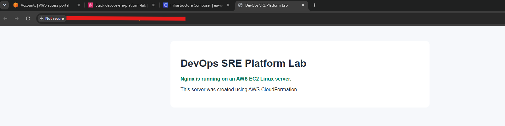
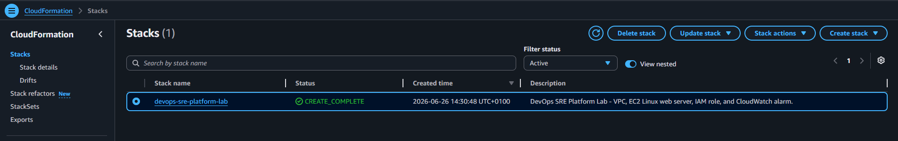
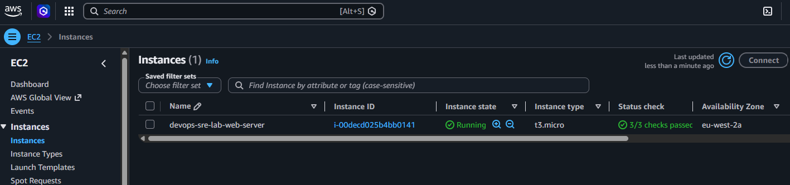
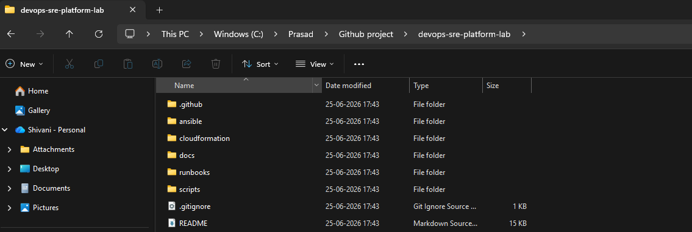
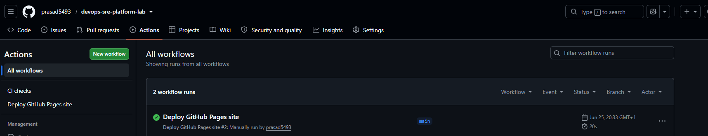
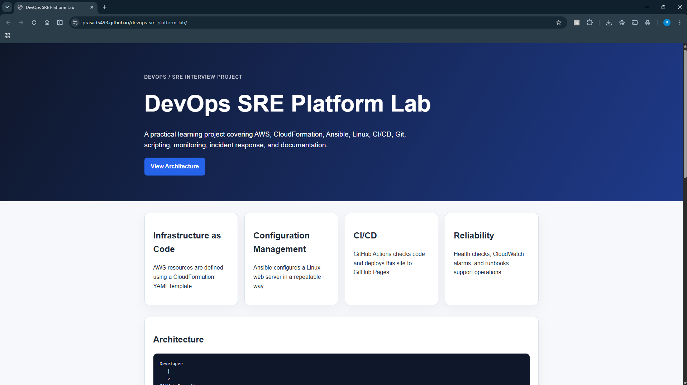
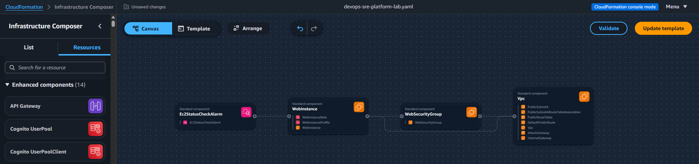

Infrastructure as Code
AWS resources are defined using a CloudFormation YAML template.
DevOps / SRE Interview Project
This project is created by Prasad Bhor to practise and demonstrate basic DevOps/SRE skills in a practical way.
A practical learning project covering AWS, CloudFormation, Ansible, Linux, CI/CD, Git, scripting, monitoring, incident response, and documentation.
How It Works View Project EvidenceAWS resources are defined using a CloudFormation YAML template.
Ansible configures a Linux web server in a repeatable way.
GitHub Actions checks code and deploys this site to GitHub Pages.
Health checks, CloudWatch alarms, and runbooks support operations.
This project has two main parts: the GitHub side and the AWS side.
I used GitHub to store the project code. GitHub Actions is used to check the project, and GitHub Pages is used to publish this project website.
I used AWS CloudFormation to create the cloud resources. The template creates the AWS infrastructure needed for a small Linux web server.
The EC2 server runs Nginx and shows a simple web page. I also added a basic health check and monitoring idea to understand how DevOps and SRE teams check if a service is working.
This is a simple front-end simulation of a service status dashboard.
No health check has been run yet.
I built this project to practise DevOps and SRE responsibilities. It shows how I can define cloud infrastructure as code, automate server setup, create CI/CD workflows, troubleshoot systems, and document operational processes.
This shows the Nginx website running on an AWS EC2 Linux server.

This shows the AWS CloudFormation stack completed successfully.

This shows the EC2 Linux server running in AWS.

This shows the project source code stored in GitHub.

This shows the CI/CD pipeline completed successfully.

This shows the project documentation deployed using GitHub Pages.

This shows the project template view in AWS Infrastructure Composer.
